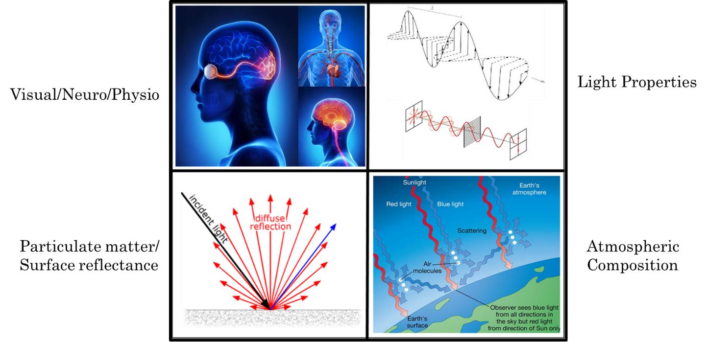
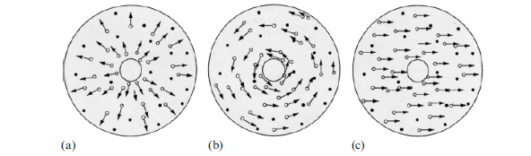
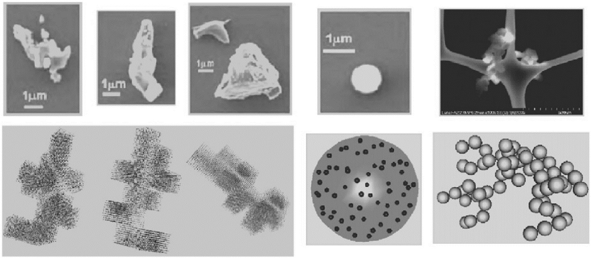

The underlying sources of sensory perception are derived from mechanisms in the neurological and physiological systems. Studying these functions has improved scientific understanding on how these mechanisms respond to physical changes in the external environment, as well as the perceptual distortions that result from such changes.
However, it is uncertain whether humans possess the sensory capabilities to respond appropriately to new forms of stimuli outside of Earth without adaptation. It is with this foundation that serves as the basis for lunar psychophysics, which aims to transform current theoretical work into a “terrestrial” model and move towards the development of a universal theory of perceptual psychophysics.
Lunar psychophysics is a novel area of specialization in perceptual psychophysics, which considers a range of visual, neurological and physiological components in perception and their relationship to optical properties of light, particulate matter/surface reflectance, atmospheric physics and psychophysics on the Moon.

Initial studies will provide the theoretical basis of lunar psychophysics in considering the visual effects of atmospheric scattering (e.g. Rayleigh scattering and complex particle light scattering or CPLS 13, 14) and its relevance to James J. Gibson’s (1979) ecological theory in the structures of perception. Gibson’s (1979) approach identifies the environmental properties that are inherent to human perception on Earth and thus will serve as a framework for identifying the sources of perceptual distortion in a lunar environment.
Ecological Optics
The fundamentals of lunar psychophysics from a neuro-physio perspective are derived from the original works of James J. Gibson (1979), who proposed an ecological approach to the structures of perception regarding the properties of light and the optic array. One unique assertion of Gibson’s theory is the notion that perception is a form of direct contact with the information contained within the optic array. Such that, perception is not a byproduct of intermediary sensory input that is an intrinsic representation in the mind of the perceiver. Rather, it proposes that perceptual information is intrinsic to the environment, and the most important perceptual stimulus within the environment is light (15).
Gibson (1979) claims that the properties of light can be changed based on the medium through which it is scattered through, thereby influencing the structure of light and the way it interacts with the environment. Without a medium, light is unstructured and thus will not reach the corresponding points on the retinal plane (15, 16). Gibson does not directly reference to any theories of light scattering in his written propositions of light as the most important perceptible structure. However, his structural analysis of ambient light is similar to the intrinsic properties of Rayleigh scattering or an Earth-like atmosphere, where light is transmitted uniformly and the surfaces reflect it diffusely. It is with this atmospheric medium that light can possess certain invariant properties and carry information for perception.
Optic Flow Theory
The study of lunar psychophysics is also rooted within Gibson’s (1950) theory of optic flow, which proposed the existence of a relationship between visual perception and underlying biological mechanisms of motion. Gibson’s theory of optic flow proposes that humans possess biological mechanisms that enable invariant features of perception. Humans have evolutionary mechanisms to interpret unstable sensory input which allows for a constant stable view of the world, and this is a result of changes in the flow of the optic array.
The flow on the optic array provides essential information about motion through the environment; specifically, information about what type of movement (e.g. rotational or directional) is taking place (17). The figure below refers to the three optic flow components, otherwise known as “particle flow fields,” which are afforded by invariant properties (i.e. light and surface reflectance) that contribute to motion perception in Earth environments.

Gibson (1979) also claimed that any space filled with unstructured light (i.e. absence of an atmosphere and/or diffused reflectance across surfaces) is as devoid of information as a “fog-filled medium” (3, 16). In theory, this assumption is in accordance with the structural integrity of a Rayleigh-like atmosphere, such that ambient light can emerge in dynamic, predictable interactions with the environment when the perceiver is in motion.
The cues humans use to interpret this information are invariant features of the optic array, and this invariant information such as light and surface reflectance properties remain constant as the observer moves through an environment. However, the question of whether this information remains invariant outside of an environment which humans are ecologically bounded (Earth) has yet to be determined. In theory, observing a distortion of perceptual information due to changes in the properties of light during motion would provide evidence suggesting these perceptual sources of information are Earth-based and no longer invariant in extraterrestrial environments.
Physiological Optics
Gibson’s assumptions can be more fully elucidated when using physiological optics to understand the interactions between the human eye and the properties of light. Due to the anatomical structure of the human eye, different wavelengths of light affect different regions of the eye in different ways. In order to see, visible light must pass through the cornea and lens to form an image at the back of the eye on the retina.
However, light on either side of the visible spectrum and near infrared (i.e. ultraviolet, medium and far infrared) is absorbed at the front of the eye by the cornea and lens, and thus never reach the retina. This preemptive absorption can damage the front of your eye. However, an interesting feature of eye physiology is that the cornea and the lens can regenerate themselves from damage in a few days (obviously, depending on severity), whereas the retina cannot.
 How is this relevant to lunar psychophysics?
How is this relevant to lunar psychophysics?
Humans can only see light the on visible spectrum. In future space explorations, as humans move further outside of Earth’s magnetosphere, they will be continually exposed to the full spectrum of light and with greater intensity; the majority of which is normally filtered through Earth’s atmosphere before it reaches the human eye. Prolonged exposure could have negative, and perhaps irreversible effects on vision and perception. Thus, understanding the visual effects of light scattering on the Moon is the first step towards determining the extent to which humans can respond appropriately to dramatic changes in light beyond the visible spectrum in space.
The Lunar Surface
Lunar Dust
On the Moon, dust particles are dispersed approximately 1.5 meters above the surface due to a significant reduction in gravity (15, 16). Dust particles in the exosphere consist of properties that create a less uniform distribution of reflectance across the surface, resulting in a different, complex form of light scattering (23, 24). Evidence for this phenomenon comes from observations of the “lunar horizon glow”, which is thought to be produced by the scattering of sunlight by exospheric dust (5, 13, 27). According to Tim Sharp (2012), these dust particles are described as, “microscopic cannon balls flying unimpeded on curved, ballistic trajectories that bounce across the lunar surface.”
Recent observations of light scattering and lunar dust near the surface have identified a series of complex lunar dust particles (non-spherical grains that are non-uniform in composition) and can be used to virtually simulate the visual effects of light scattering on the Moon (13). Richard and colleagues (2011) developed a model to examine the scattering properties of “virtual” lunar dust that incorporates a series of complex lunar dust particles (non-spherical grains that are non-uniform in composition) which can be used to simulate virtual conditions in which Mie scattering does and does not apply on the Moon.
These virtual simulations have shown that the scattering of realistic lunar dust can be several times brighter than the typical range of Mie particles that have been historically modeled in the lunar exosphere. When the visual effects of these models are applied in Unity, this new VR model produces more visually accurate effects of light scattering observed on the Apollo missions (13). Refer to the Rendering Planetary Atmospheres section for additional information.

Reflectance Properties of Lunar Regolith
On Earth, Rayleigh scattering influences the appearance of reflectance properties on the surface objects, known as the Bi-directional Reflection Distribution Function (BRDF) (10). The illumination of an Earth-like or “Lambertian” surface is directly proportional to the cosine of the angle of occurrence, which results in the scattering of light to be dispersed equally in all directions. Thus, a person viewing an object on a Lambertian surface would observe the same level of brightness across various objects in a scene, regardless of their orientation relative to the light source.
Lambertian surfaces on Earth have characteristic properties such as layout, shape, texture, shading, composition and spectral reflectance (3). The particolored terrain of Earth also causes surface colors to be commonly associated with specific kinds of surface compositions or textures. In the event the shape of an object results in varying degrees of reflectance on a Lambertian surface, an individual would then rely on visual cues such as shading, texture and color to perceive an object’s surface or 3D shape (10).